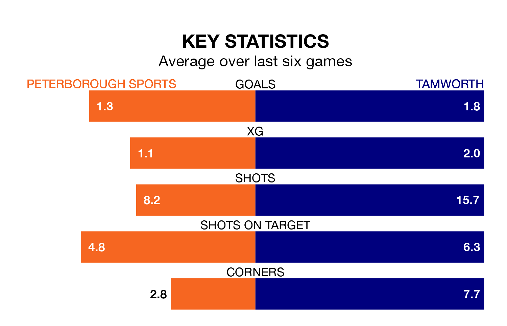

Two of National League North and South's top sides face each other at Lincoln Road in Saturday's kick-off, when zero-placed Peterborough Sports host third-placed Tamworth.
Peterborough Sports have picked up eight wins and four draws from 22 games so far this season, and sit 16 points below the visitors going into the 3pm match.
Tamworth, meanwhile, have won 14 and drawn two, picking up 44 points.
With Jasbir Singh between the sticks, Tamworth can rely on one of the league's safest pair of hands. He has kept 11 clean sheets in his 21 appearances this season, and no 'keeper has prevented the opposition scoring more often in National League North and South.
In Peterborough Sports's net, Peter Crook has six clean sheets in 22 games. He has conceded a goal every 64 minutes, more than twice as often as the 158 minutes between goals for Singh.
With 39 goals in 22 games so far this season, the visitors are scoring more than average in the league with 1.8 goals per game. And they are conceding fewer than average, letting in 16 goals at a rate of 0.7 per game.
The home team, meanwhile, are below average scorers, with 1.1 goals per game, compared to a league average of 1.4. They have conceded 1.5 goals per game.
Peterborough Sports are in mixed form in National League North and South, with three wins and three losses from their last six games.
With four wins and two losses over that period, Tamworth's form is better – they have taken 12 points from 18, compared to Peterborough Sports's nine.
In the last three years, Peterborough Sports and Tamworth have played each other on three occasions. Peterborough Sports won two of them and Tamworth one.
Their last meeting was on September 9, when Tamworth won 3-0 at home.
Peterborough Sports's last match was on December 16, a 2-1 win against South Shields, with Dion Leonard Sembie-Ferris and Hayden Cann getting the goals for Peterborough Sports.
Tamworth beat Southport 4-0 last time out, also on December 16, with Ben Acquaye, Christoful Milers Wreh, Kyle Finn and Nathan Tshikuna on the scoresheet.
Updated: 15:16, 21/12/23